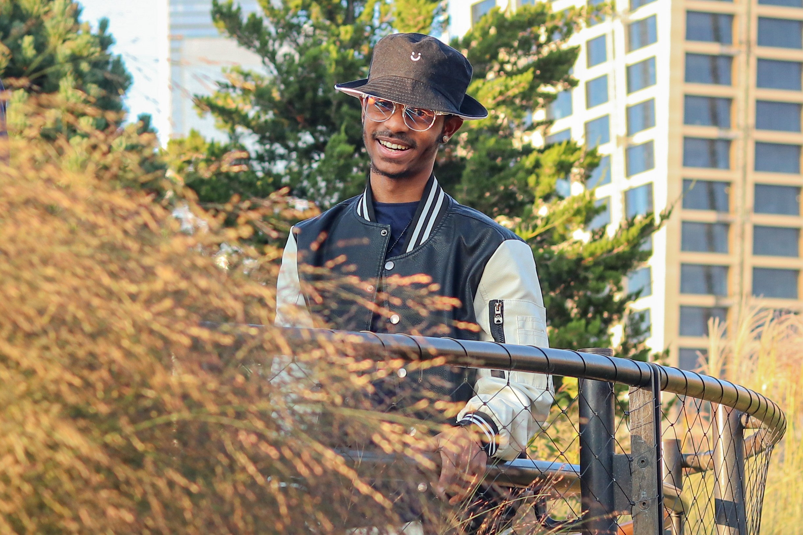

M. Franco Sanchez

Summary & Objective
I am currently in my final semester of studying Software Engineering,
equipped with proficiency in Web Development and a flair for design. I am
keen to integrate myself into your Software Development firm, channeling
my fervor for crafting innovative technological solutions while thriving
within a dynamic and creative team environment.
Education
-
Software Engineer (Final-term student)
Universidad Adventista Dominicana (UNAD) |
2017 > present...
-
English Inmmersion Program
Instituto Cultural Dominico Americano (ICDA) |
2018
-
Bachelor's Degree in Computer Science
Centro Educativo El Duarte | 2014 > 2016
-
Computer Technician
Aprende.org (Fundacion Carlos Slim) | 2016
Work Experience
-
Bilingual Technical Support Representative
Horatio | 2023 - present...
-
Bilingual Technical Support Representative
Alorica | September 2021 - January 2023
-
Multiple Roles
Six Flags Great America, Gurnee, Illinois |
July 2021 - September 2021
-
Bilingual Customer Service Representative
Teleperformance | September 2020 - January 2021
-
Bilingual Customer Service Representative
Teleperformance | May 2019 - October 2019
Skills
- Proficiency in Computer Equipment
- Web Development Skills
- Certain Design Skills
Awards & Certifications